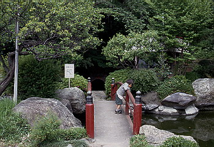
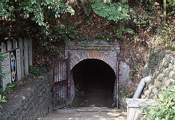
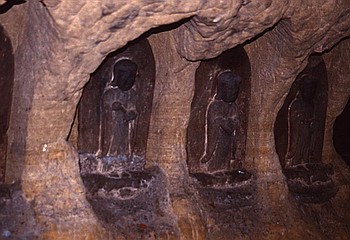

稲城市のよみうりランド駅近くに弁天洞窟なる洞窟がある。
威光寺の境内にあるこの洞窟、東京都の新東京百景に選ばれたところなので御存じの人は御存じかもしれないが、これが石仏と洞窟の織りなす超絶の密教曼陀羅ワールドなのである。

この洞窟は元々1500年程前の横穴式古墳、つまり「やぐら」のようなものであったのだろう。
それを明治期にさらに掘りすすめ、現在の形になっている。洞窟の平面形状は「8」の字型の洞窟の右横に逆「c」の字をくっ付けたような形になっており、内部には近くの穴澤天神社から移された弁天十五童子などがまつられている。
完成は明治17年、全長65ｍ、広さ660ｍ、結構な規模なのである。
受付でマッチと蝋燭を一本を渡されて中に入ってみる。マッチは弁天洞窟オリジナルマッチで、少し得した気分。

池を渡ると見えてくるレンガ造の入り口は8の字の一番下の部分である。そこから左に折れるともう中は真っ暗。照明は一切ない。


蝋燭の灯に照らされた壁面に安置されるのは弁天童子達。
さらに進むと8の字の中央部に至る。そこから先は8の字の上部分への道と逆cの字の部分とに別れる。
灯りがついていれば適当に進むのだが、なにせ蝋燭の灯りなので光が奥まで届かず先が見えない。非常に不安な気持ちにさせてくれるのである。とりあえず8の字の上の方へいってみる。
早くも蝋燭の灯が消えてしまったので仕方なくよみうりランドで購入したお土産のレインボーライトを灯してみると・・・
いきなり腰を抜かしそうになった。七色のサイケデリックな光の中に突然、巨大な蛇が浮かび上がったのである。
良く見れば足下の両側は池になっており、その壁面一杯に太さ1ｍはあろうかという蛇のレリーフが施されていたのだ。
しかも御丁寧に白くペイントまでされている。その蛇の顔をいきなりサイケな光で照らしてしまったものだから蛇嫌いの私としては堪らない。
もしも蝋燭の灯りだったら相当な至近距離で蛇と御対面することになってしまっただろうから本当に腰を抜かしていたかもしれない。レインボーライト、ありがとう。
その先には、金剛界と胎蔵界の二つの通路がありそれぞれに大日如来がまつられており、さらに逆cの字部分は、その内側の池を囲むように通路がありそこの壁面にも大きな白蛇のレリーフがあった。
その池を過ぎやっと出口の明かりが見えたときは思わず小走りになってしまった。
暗闇、無音、大蛇、池、石仏、崩れそうな砂岩の壁、複雑な通路、まるでおばけ屋敷に一人で入っちゃったようなモンである。しかもおばけ屋敷ならば叫べば誰かが助けてくれるけれど、ここでは道に迷って蝋燭でも消えたらしばらく外にはでられない。入口の地図での道順の確認とライトの携帯を強くお勧めしておく。
ちなみに、弁天十五童子が元々いた穴澤天神社下の胎内潜り（写真右）も規模は小さいがやっぱり金剛界と胎蔵界の二つの通路から出来ており、弁天洞窟のプロトタイプのようで非常に興味深い。